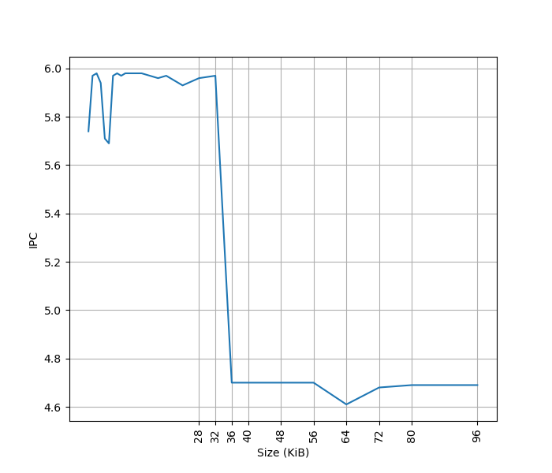
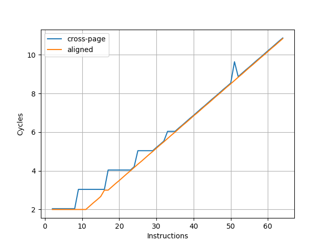
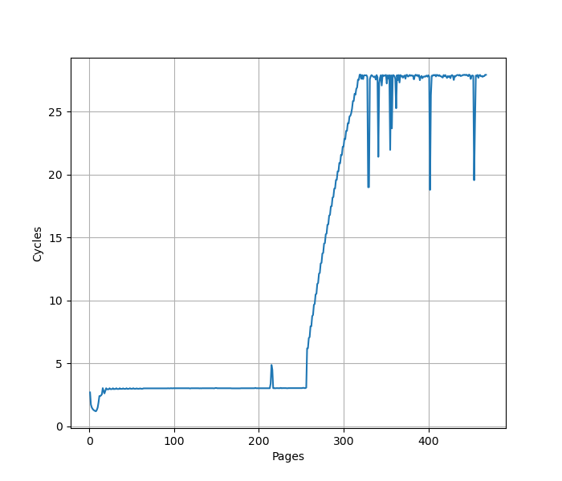
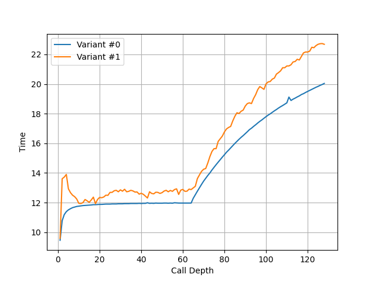
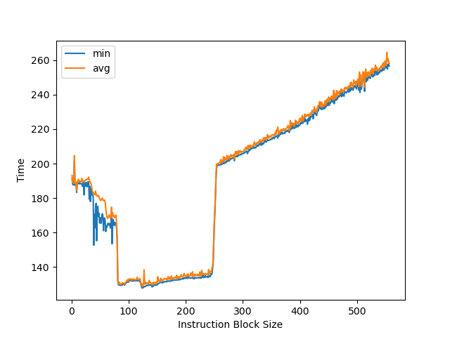
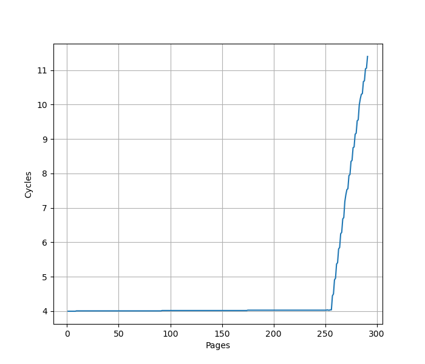
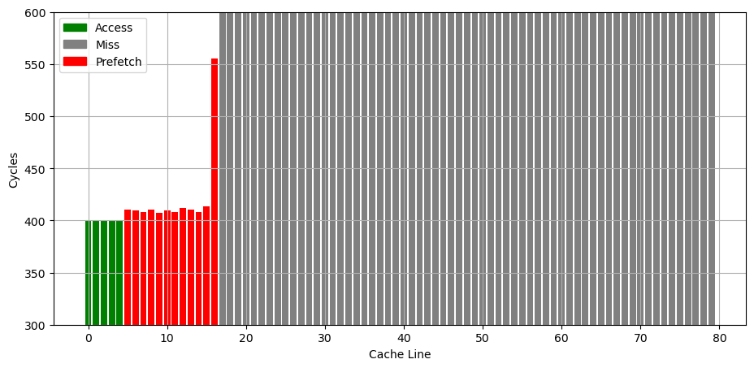
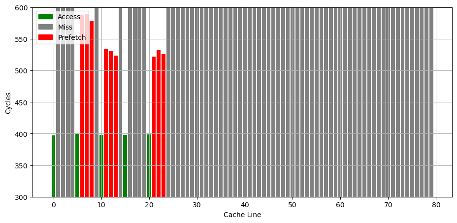

IBM POWER9 微架构评测¶
背景¶
继 IBM POWER8 之后，也来评测一下后续的 IBM POWER9 微架构。IBM POWER9 有 SMT4 和 SMT8 两种版本，我只有 SMT4 版本的测试环境，下列所有评测都是针对 SMT4 版本进行测试。
官方信息¶
IBM 关于 POWER9 微架构有如下公开信息：
下面分各个模块分别记录官方提供的信息，以及实测的结果。官方信息与实测结果一致的数据会加粗。
Benchmark¶
IBM POWER9 的性能测试结果见 SPEC。
前端¶
L1 ICache¶
官方信息：32KB(SMT4)/64KB(split into 2 regions, SMT8)
为了测试 L1 ICache 容量，构造一个具有巨大指令 footprint 的循环，由大量的 nop 和最后的分支指令组成。观察在不同 footprint 大小下的 IPC：

测试环境是 SMT4 Core，所以只有 32KB 的容量。超出 L1 ICache 容量后，IPC 从 6 降低到了 4.7。相比 POWER8，容量不变，超出 ICache 容量后的 IPC 提高了。
取指带宽¶
官方信息：32 bytes/cycle
为了测试实际的 Fetch 宽度，参考 如何测量真正的取指带宽（I-fetch width） - JamesAslan 构造了测试。
其原理是当 Fetch 要跨页的时候，由于两个相邻页可能映射到不同的物理地址，如果要支持单周期跨页取指，需要查询两次 ITLB，或者 ITLB 需要把相邻两个页的映射存在一起。这个场景一般比较少，处理器很少会针对这种特殊情况做优化，但也不是没有。经过测试，把循环放在两个页的边界上，发现 IBM POWER9 微架构遇到跨页的取指时确实会拆成两个周期来进行。
在此基础上，构造一个循环，循环的第一条指令放在第一个页的最后四个字节，其余指令放第二个页上，那么每次循环的取指时间，就是一个周期（读取第一个页内的指令）加上第二个页内指令需要 Fetch 的周期数，多的这一个周期就足以把 Fetch 宽度从后端限制中区分开，实验结果如下：

图中蓝线（cross-page）表示的就是上面所述的第一条指令放一个页，其余指令放第二个页的情况，横坐标是第二个页内的指令数，那么一次循环的指令数等于横坐标 +1。纵坐标是运行很多次循环的总 cycle 数除以循环次数，也就是平均每次循环耗费的周期数。可以看到每 8 条指令会多一个周期，因此 IBM POWER9 的前端取指宽度确实是 8 条指令即 32 字节。
为了确认这个瓶颈是由取指造成的，又构造了一组实验，把循环的所有指令都放到一个页中，这个时候 Fetch 不再成为瓶颈（图中 aligned），两个曲线的对比可以明确地得出上述结论。
随着指令数进一步增加，最终瓶颈在每周期执行的 NOP 指令数，因此两条线重合。
L1 ITLB¶
为了测试 L1 ITLB 的容量，构造 b 序列，每个 b 在一个单独的页（64KB 的页大小）中，观察 b 的性能：

可以看到明显的 256 pages 的拐点，对应了 256 entry 的 L1 ITLB。CPI 从 3 升高到了 28。相比 POWER8 的 64-entry L1 ITLB 容量有所提升。
BTB (aka Branch Target Address Calculator, BTAC)¶
官方信息：1 cycle latency
Return Address Stack¶
构造不同深度的调用链，测试每次调用花费的时间，得到如下测试结果：

可以看到 64 的拐点，对应的就是 RAS 的大小。
CBP (Conditional Branch Predictor)¶
官方信息：BHT(3 cycle redirect) + TAGE(4 components, 5 cycle redirect), 256-bit LGHB(long global history vector)
Dispatch¶
官方信息：6 instructions per SMT4, 12 instructions per SMT8
后端¶
ROB (aka ICT)¶
官方信息：256 entries per SMT4 core
把两个独立的 long latency pointer chasing load 放在循环的头和尾，中间用 NOP 填充，当 NOP 填满了 ROB，第二个 pointer chasing load 无法提前执行，导致性能下降。测试结果如下：

拐点在 256 附近。相比 POWER8 的 28*6=168 有所提升
Issue Queue¶
官方信息：54 instructions per SMT4 core, 108 instructions per SMT8 core
L1 DCache¶
官方信息：32KB(SMT4)/64KB(SMT8, split into two regions)
L1 DTLB¶
用类似测 L1 DCache 的方法测试 L1 DTLB 容量，只不过这次 pointer chasing 链的指针分布在不同的 64KB page 上，使得 DTLB 成为瓶颈：

可以看到 256 Page 出现了明显的拐点，对应的就是 256 的 L1 DTLB 容量。没有超出 L1 DTLB 容量前，Load to use latency 是 4 cycle。L1 DTLB 容量相比 POWER8 的 48(ST)/96(SMT) 有所提升，和 POWER8 的 256-entry L2 DTLB 容量相同。
L2 Cache¶
官方信息：8-way 512KB L2 cache
L3 Cache¶
官方信息：20-way 10MB eDRAM L3 cache per core
Prefetcher¶
参考 Battling the Prefetcher: Exploring Coffee Lake (Part 1) 的方式，研究预取器的行为：分配一片内存，把数据从缓存中 flush 掉，再按照特定的访存模式访问，触发预取器，最后测量访问每个缓存行的时间，从而得到预取器预取了哪些缓存行的信息。
首先是连续访问若干个 128B cacheline，观察哪些被预取了进来：

预取的行为相比 POWER8 更加激进：有更多的缓存行被预取到了更近的 L1（或者是 L2？）。
如果是访问了几个分立的缓存行，有时会表现出 Next 3 Line 的行为，但都是到 L3：

总结¶
POWER9 相比 POWER8 是一次较大的架构升级，主要变化：
- L1 ITLB 从 64 项大幅增加到 256 项
- 增加了 BTAC（BTB），分支预测时延降至 1 周期
- RAS 从 32 项增加到 64 项
- 条件分支预测器从 LBHT+GBHT+GSEL 升级为 TAGE
- ROB 从 GCT 的 28 Group（约 168 指令）改为 256 项 ICT，粒度从 Group 改为指令
- L1 DTLB 从 48(ST)/96(SMT) 项增加到 256 项
虽然升级了不少，但迭代速度已经赶不上竞争对手了。